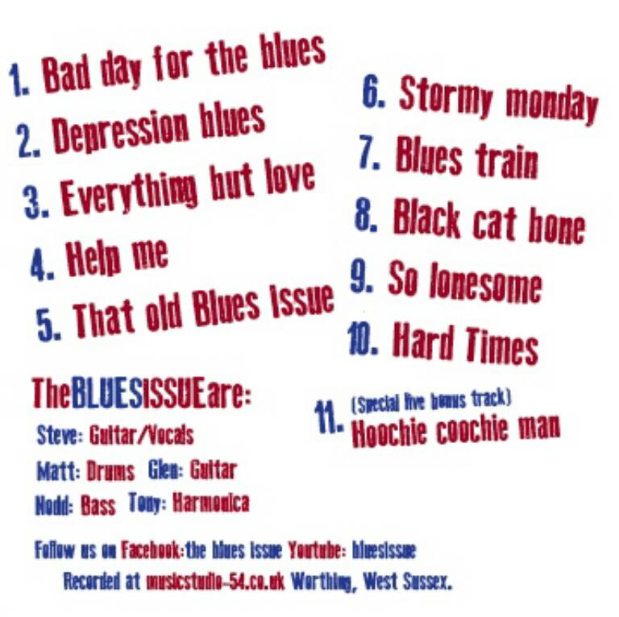
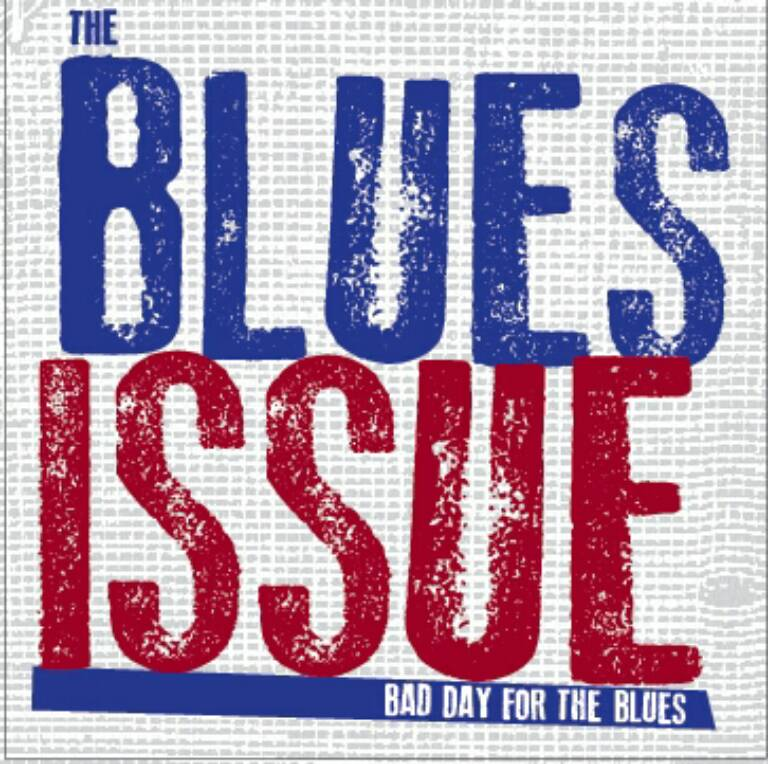
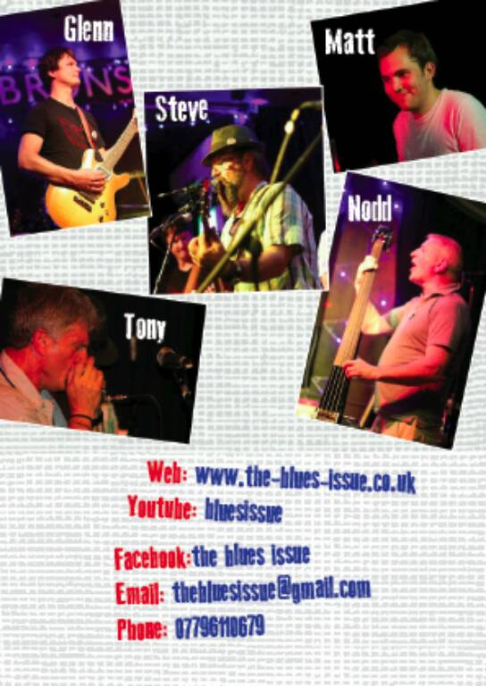
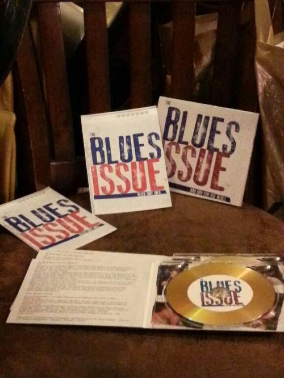

Listen
Bad Day For the Blues (2013)
Available at all Blues Issue gigs and by sending us an email, the Blues Issues debut album 'Bad day for the Blues" contains a mix of original material and classic blues tracks all performed and recorded at Studio54.



